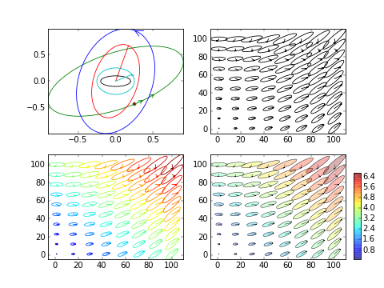
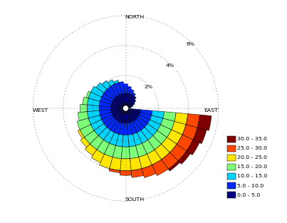
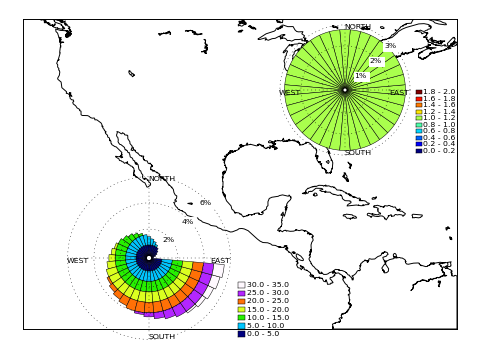
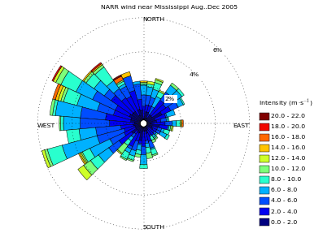
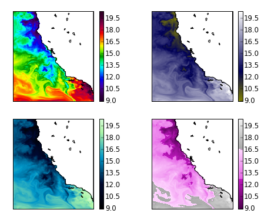
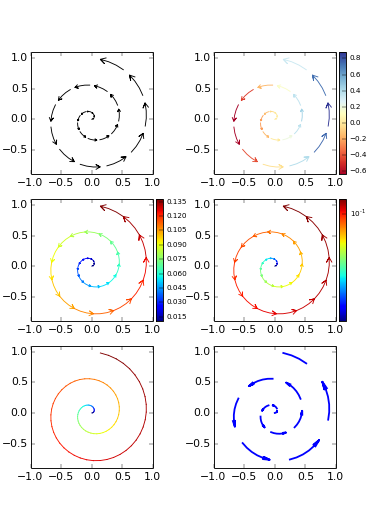
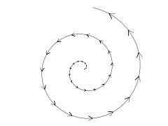
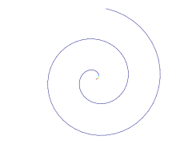

∴ specialized plots and tools
Ellipses
Data visualization using ellipses is very used for instance to plot
the harmonics of tidal currents, to draw dispersions plots, etc.
Ellipses are drawn with two sinusoids with same frequency and the four
variables amplitudes and phases. These four variables can be converted
in major and minor axis, inclination and initial phase. Here is shown
a function to plots ellipses with the second set of variables (semi-major,
semi-minor, inclination and phase). These variables are common outputs
from tidal analysis tools (like
Foreman's Progiciel d'analyse et de prévision des marées
(
IOS
Tidal Package),
t_tide
and
tappy).

§
Wind roses
Wind roses are frequency, intensity, direction plots,ie, they represent
cumulative histograms drawn on a compass rose using direction as abscissas.
They are used to illustrate the variability of a 2d vector
(without time information), like wind, of course. Module
pl_plots includes
the wind_rose tool which is a clone of the matlab version
(
wind_rose.m, matlab file exchange).


⁂
Now something more realistic... Let's get wind data from an opendap server,
and plot its direction and intensity. Next example uses ROMS forcing winds
(NARR) from the
pong-opendap server,
near the Mississippi mouth betwen August and December 2005.

§
Colormaps
Matplotlib includes colormaps from several sources. Included in
okean.pl_tools are some more,
like the ncview colormaps. Some examples follow:

§
Along path arrows
Tool to plot along path arrows, usefull to visualize stream lines, for instance.

⁂
Let's animate it...


§